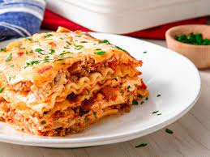

Lasagna

Description
Ingredients
- Lean gound beef
- Onion and garlic
- Pasta Sauce
- Tomato paste
- Parsely, salt, italian seasoning, and black pepper
- Lasagna noodles
- Parmesan, Mozzerella, and Ricotta cheese
- 1 Egg
Steps
- Boil the pasta in a large pot of salted water.
- Cook the ground beef with onion and garlic.
- Once the beef is almost cooked fully, add the pasta sauce, and season generously.
- Simmer until the meat sauce thickens
- Combine the cheese mixture: Stir the cheese mixture together in a bowl with the egg.
- Layer the lasagna starting with a layer of the pasta, then the sauce, followed by more pasta, and then cheese.
- Repeat for as many layers, and bake without the last layer of cheese
- Cover with foil, and bake for about 10 to 15 minutes
- After the time is up, add another layer of the cheese mixture and bake for an additional 15 mintues until the cheese browns on the top.